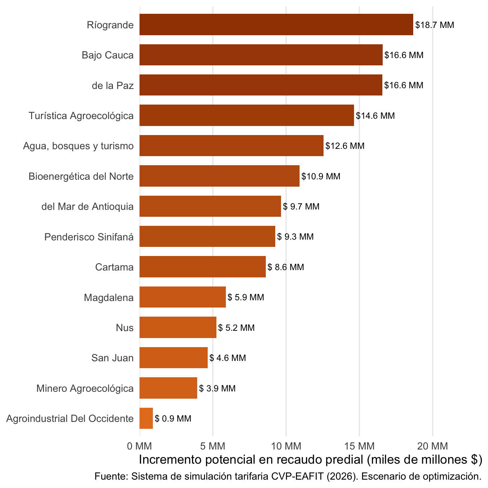
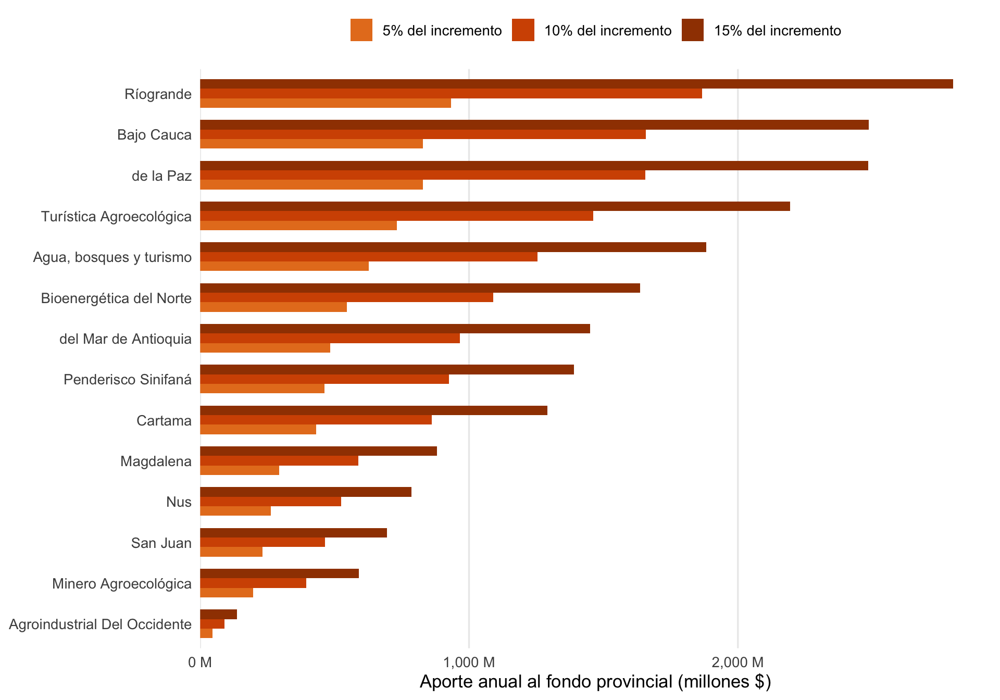
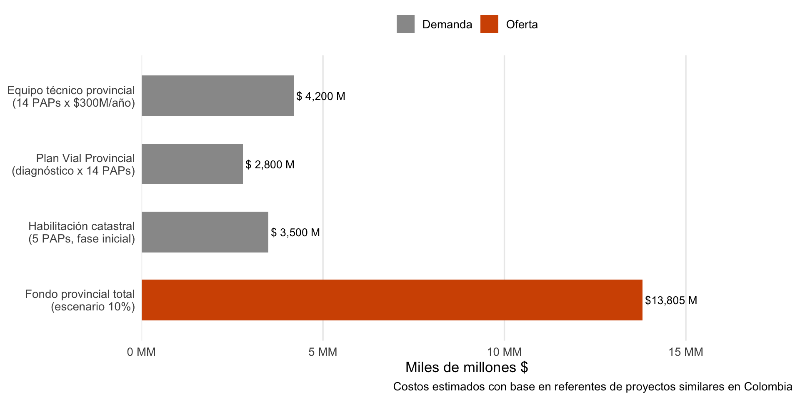
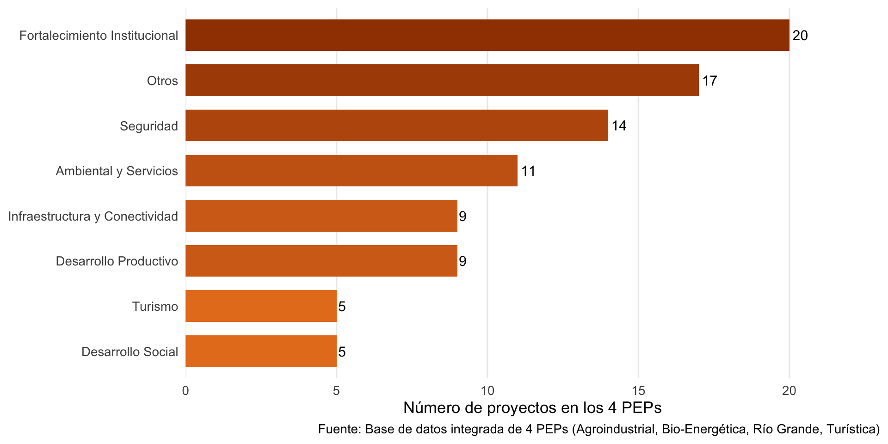
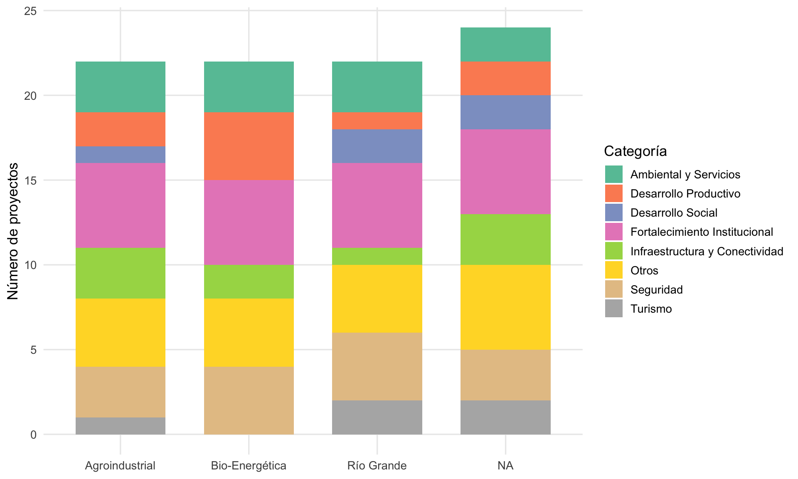
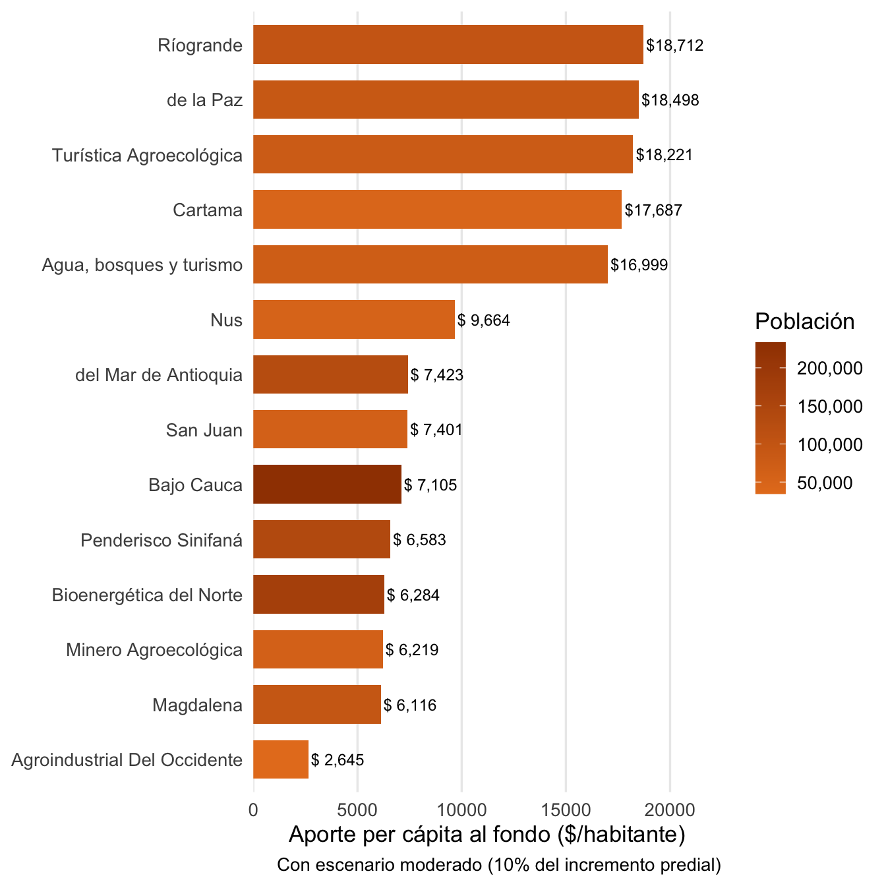

Fondo de Incentivos
Transferencias fiscales basadas en desempeño para la cooperación provincial
El problema
Las PAPs carecen de financiamiento estable y predecible (Sanabria Pulido et al., 2025). Sin recursos propios significativos, dependen de aportes voluntarios de los municipios miembros — un modelo frágil que no genera incentivos para la cooperación sostenida. Un fondo de incentivos departamentales puede resolver este problema creando un ciclo virtuoso de integración.
El punto de partida: el dividendo catastral
La actualización catastral en curso en Antioquia genera un incremento significativo en el recaudo predial potencial de los municipios de las PAPs. Como se documenta en la sección de Gestoría Catastral, el escenario de optimización tarifaria podría generar hasta $138 mil millones adicionales en recaudo predial anual para las 14 PAPs.
Este “dividendo catastral” es la fuente natural para financiar un fondo provincial: una fracción del incremento en recaudo — que antes no existía — se destina a fortalecer la cooperación que hizo posible ese mismo incremento.
Ejercicio de simulación: el Fondo Provincial
¿Qué pasaría si los municipios de cada PAP destinaran una fracción del incremento en recaudo predial a un fondo provincial compartido? El ejercicio simula tres escenarios:
| Escenario | Tasa de aporte | Monto total estimado | Analogía internacional |
|---|---|---|---|
| Conservador | 5% del incremento | ~$6.9 mil millones/año | Similar al ICMS-E brasileño (1-5%) |
| Moderado | 10% del incremento | ~$13.8 mil millones/año | Similar a la DGF francesa |
| Ambicioso | 15% del incremento | ~$20.7 mil millones/año | Modelo de alta integración |
Nota importante
Este es un ejercicio teórico que ilustra la escala potencial del fondo. Los municipios contribuirían solo sobre el incremento en recaudo (no sobre el recaudo base), y solo en escenarios donde la optimización tarifaria efectivamente se implemente. El diseño real requiere negociación política y sustento jurídico.

| Provincia | Municipios | Población | Recaudo actual (M) | Incremento predial (M) | Aporte 5% (M) | Aporte 10% (M) | Aporte 15% (M) | $/habitante (10%) |
|---|---|---|---|---|---|---|---|---|
| Ríogrande | 5 | 99,800 | 68,520 | 18,675 | 934 | 1,868 | 2,801 | 18,712 |
| Bajo Cauca | 5 | 233,345 | 75,654 | 16,578 | 829 | 1,658 | 2,487 | 7,105 |
| de la Paz | 4 | 89,554 | 93,167 | 16,565 | 828 | 1,657 | 2,485 | 18,498 |
| Turística Agroecológica | 7 | 80,280 | 71,109 | 14,628 | 731 | 1,463 | 2,194 | 18,221 |
| Agua, bosques y turismo | 7 | 73,842 | 61,313 | 12,553 | 628 | 1,255 | 1,883 | 16,999 |
| Bioenergética del Norte | 13 | 173,590 | 46,675 | 10,908 | 545 | 1,091 | 1,636 | 6,284 |
| del Mar de Antioquia | 4 | 130,166 | 46,358 | 9,663 | 483 | 966 | 1,449 | 7,423 |
| Penderisco Sinifaná | 9 | 140,700 | 55,670 | 9,262 | 463 | 926 | 1,389 | 6,583 |
| Cartama | 5 | 48,687 | 33,491 | 8,611 | 431 | 861 | 1,292 | 17,687 |
| Magdalena | 4 | 96,101 | 68,974 | 5,878 | 294 | 588 | 882 | 6,116 |
| Nus | 4 | 54,211 | 16,480 | 5,239 | 262 | 524 | 786 | 9,664 |
| San Juan | 4 | 62,670 | 22,151 | 4,638 | 232 | 464 | 696 | 7,401 |
| Minero Agroecológica | 3 | 63,340 | 18,820 | 3,939 | 197 | 394 | 591 | 6,219 |
| Agroindustrial Del Occidente | 4 | 34,558 | 3,825 | 914 | 46 | 91 | 137 | 2,645 |
¿Qué podría financiar el fondo?
Para dimensionar la escala del fondo, comparamos el escenario moderado (10% del incremento, ~$13.8 mil millones) con referentes de costo:

Con el escenario moderado, el fondo podría financiar simultáneamente:
- Equipos técnicos provinciales para las 14 PAPs (~$300M/año por equipo)
- Diagnósticos de transporte (Plan Vial Provincial) para las 14 PAPs
- Habilitación catastral inicial para las 5 PAPs priorizadas
- Y aún quedar un remanente para proyectos de inversión provincial
El mensaje es claro: el dividendo catastral es suficiente para financiar la operación básica de las 14 PAPs y aún dejar margen para inversión. No se trata de recursos nuevos del departamento, sino de una fracción del incremento que la propia cooperación provincial genera.
La conexión con los Planes Estratégicos
Los 4 PEPs analizados identifican 90 proyectos organizados en ejes estratégicos. Ninguno incluye presupuesto ni cronograma de inversión — son prioridades sin financiamiento definido. El fondo provincial podría ser el mecanismo para darles viabilidad.

Los 11 proyectos compartidos: la agenda mínima provincial
De los 90 proyectos, 11 aparecen en los 4 PEPs analizados. Estos forman la agenda mínima que toda provincia prioriza — y que el fondo debería financiar como base:
| Proyecto | Categoría | Provincias |
|---|---|---|
| Gestión Residuos Sólidos | Ambiental y Servicios | 4/4 |
| PSA | Ambiental y Servicios | 4/4 |
| Actualización EOT/PBOT | Fortalecimiento Institucional | 4/4 |
| Banco de Proyectos | Fortalecimiento Institucional | 4/4 |
| Fortalecimiento fiscal | Fortalecimiento Institucional | 4/4 |
| Gestor Catastral | Fortalecimiento Institucional | 4/4 |
| Sistema de Información | Fortalecimiento Institucional | 4/4 |
| Plan Vial Provincial | Infraestructura y Conectividad | 4/4 |
| Centro Monitoreo | Seguridad | 4/4 |
| Escuadrón EMPÁS | Seguridad | 4/4 |
| PPISCC | Seguridad | 4/4 |
Proyectos sin financiamiento: la brecha que el fondo cierra

El argumento central
Los PEPs son planes sin presupuesto. Los 90 proyectos identificados representan las prioridades reales de las provincias, pero ninguno tiene fuente de financiamiento asegurada. El dividendo catastral — canalizado a través de un fondo provincial — podría ser el mecanismo que convierta estas prioridades en inversiones concretas. Con el escenario moderado (10%), cada PAP recibiría entre $260M y $1,900M anuales para ejecutar sus proyectos estratégicos.
La distribución: equidad vs. incentivo

El gráfico revela una tensión central del diseño: las PAPs con menor población pero mayor incremento relativo en avalúos (como De la Paz o Ríogrande) generarían más por habitante. Un fondo bien diseñado debe decidir entre:
- Distribución proporcional al aporte: Cada PAP recibe en proporción a lo que aporta — incentiva la optimización tarifaria
- Distribución solidaria: Se redistribuye hacia PAPs con menor capacidad fiscal — cierra brechas
- Distribución por desempeño: Se asigna según indicadores de cooperación provincial (el CIF) — incentiva la integración
La evidencia internacional (Direction Générale des Collectivités Locales, 2024; Sauquet et al., 2021) sugiere un modelo híbrido: un componente fijo (solidario) y un componente variable (desempeño).
Modelos internacionales
ICMS Ecológico (Brasil)
El modelo más estudiado de transferencias fiscales basadas en desempeño (Ring, 2008; Santos et al., 2021; Sauquet et al., 2021):
| Dimensión | Descripción |
|---|---|
| Mecanismo | Redistribuye 1-5% del ICMS estatal a municipios basado en indicadores ecológicos |
| Adopción | 17 de 26 estados brasileños (1991-2017) |
| Resultado | Aumento significativo de áreas protegidas municipales |
| Limitación | “Exitoso pero auto-limitante” — el incentivo decrece al maximizar indicadores |
Principio transferible: Usar criterios de cooperación provincial (en lugar de ecológicos) para distribuir recursos departamentales.
DGF Bonifiée (Francia)
El sistema francés de incentivos fiscales para cooperación intermunicipal (Direction Générale des Collectivités Locales, 2024; Sénat de la République Française, 2023):
| Dimensión | Descripción |
|---|---|
| Mecanismo | La Dotation Globale de Fonctionnement incluye bonificación para intercomunalidades con alto CIF |
| CIF | Coeficiente de Integración Fiscal: mide la proporción de ingresos fiscales del EPCI sobre el total |
| Resultado | 100% del territorio francés cubierto por algún EPCI |
| Clave | Sistema progresivo — cada punto de integración genera más recursos |
Principio transferible: Crear un CIF provincial antioqueño que mida el grado de integración funcional de cada PAP.
Factores de adopción
Droste et al. (2017) identifican empíricamente qué condiciones facilitan la adopción de este tipo de mecanismos:
- Presión fiscal de los municipios — incentiva búsqueda de nuevas fuentes
- Alineación política entre nivel departamental y municipal
- Difusión horizontal — el éxito de una PAP motiva a otras
- Capacidad institucional como condición necesaria (no suficiente)
Diseño conceptual del fondo
El CIF Provincial Antioqueño
flowchart TD
A["PAP asume<br/>competencias"] --> B["CIF provincial<br/>aumenta"]
B --> C["Fondo departamental<br/>asigna más recursos"]
C --> D["PAP fortalece<br/>capacidad"]
D --> A
E["Catastro"] --> A
F["Transporte"] --> A
G["Proyectos<br/>conjuntos"] --> A
style A fill:#D35400,color:#fff,stroke:#D35400
style B fill:#E67E22,color:#fff,stroke:#D35400
style C fill:#E67E22,color:#fff,stroke:#D35400
style D fill:#D35400,color:#fff,stroke:#D35400
style E fill:#16A085,color:#fff,stroke:#16A085
style F fill:#2980B9,color:#fff,stroke:#2980B9
style G fill:#8E44AD,color:#fff,stroke:#8E44AD
El CIF provincial mediría:
- Componente fiscal: Proporción de ingresos gestionados a nivel provincial vs. municipal
- Componente funcional: Número de competencias efectivamente ejercidas por la PAP
- Componente de calidad: Resultados medibles de la gestión provincial (cobertura catastral, conectividad, etc.)
Indicadores de distribución propuestos
| Indicador | Peso | Fuente de verificación |
|---|---|---|
| PEP adoptado y vigente | 20% | Acta del Órgano Directivo |
| Avance en habilitación catastral | 20% | Certificación IGAC |
| Proyectos provinciales cofinanciados | 20% | Informes de ejecución |
| Integración de servicios (transporte, residuos) | 15% | Contratos interadministrativos |
| Participación ciudadana documentada | 10% | Actas de mesas de trabajo |
| Articulación con POT/EOT | 10% | Concejos municipales |
| Innovación provincial | 5% | Proyectos piloto |
Principios de diseño
Extraídos de la evidencia internacional (Direction Générale des Collectivités Locales, 2024; Sauquet et al., 2021):
- Simplicidad: Fórmula transparente y verificable
- Proporcionalidad: Monto significativo para generar incentivo real
- Graduabilidad: Recompensar mejora progresiva, no solo metas binarias
- Adicionalidad: Complementar, no reemplazar, otras fuentes
- Monitoreo: Indicadores con datos verificables periódicamente
Riesgos identificados
| Riesgo | Mitigación |
|---|---|
| Auto-limitación (Santos et al., 2021) | Indicadores dinámicos que premien mejora continua |
| Integración cosmética | Verificación de resultados, no solo de procesos |
| Ciclos electorales (Bardhan, 2002) | Diseño institucional que trascienda periodos de gobierno |
| Soft budget constraints (Martinez-Vazquez, 2025) | El fondo complementa, nunca reemplaza recursos propios |
| Resistencia municipal | El aporte es sobre el incremento, no sobre el recaudo base |
Secuencia propuesta
flowchart TD
A["<b>Fase 1: Diseño</b><br/>Meses 1-6<br/>Marco normativo<br/>(ordenanza departamental)"] --> B["<b>Fase 2: Piloto</b><br/>Meses 6-12<br/>3-4 PAPs con mayor<br/>dividendo catastral"]
B --> C["<b>Fase 3: Evaluación</b><br/>Meses 12-18<br/>Ajuste de indicadores<br/>y fórmula"]
C --> D["<b>Fase 4: Escalamiento</b><br/>Meses 18-24<br/>Expansión a<br/>las 14 PAPs"]
style A fill:#D35400,color:#fff,stroke:#A04000
style B fill:#E67E22,color:#fff,stroke:#D35400
style C fill:#E67E22,color:#fff,stroke:#D35400
style D fill:#A04000,color:#fff,stroke:#A04000
Base de evidencia
La investigación sobre fondos de incentivos se sustenta en 6 fichas de extracción:
- Ring (2008) — ICMS Ecológico: modelo fundacional de transferencias fiscales ecológicas
- Sauquet et al. (2021) — Revisión global de transferencias fiscales ecológicas (Nature Sustainability)
- Santos et al. (2021) — Análisis del efecto auto-limitante del ICMS-E
- Droste et al. (2017) — Factores empíricos de adopción de EFT
- Direction Générale des Collectivités Locales (2024) — DGF bonifiée y Coeficiente de Integración Fiscal francés
- Sénat de la République Française (2023) — Condiciones de elegibilidad para la DGF bonifiée
Referencias
Bardhan, P. (2002). Decentralization of Governance and Development. Journal of Economic Perspectives, 16(4), 185-205. https://doi.org/10.1257/089533002320951037
Direction Générale des Collectivités Locales. (2024). DGF des EPCI: La Dotation d’Intercommunalité. Collectivités Locales, Ministère de l’Intérieur. https://www.collectivites-locales.gouv.fr/finances-locales/dgf-des-epci
Droste, N., Ring, I., Santos, R., & Kettunen, M. (2017). The Adoption of Ecological Fiscal Transfers: An Empirical Analysis. Land Use Policy, 70, 567-575. https://doi.org/10.1016/j.landusepol.2017.10.050
Martinez-Vazquez, J. (2025). Decentralization in Theory and Practice: A Comprehensive Review. International Center for Public Policy, Georgia State University.
Ring, I. (2008). Integrating Local Ecological Services into Intergovernmental Fiscal Transfers: The Case of the Ecological ICMS in Brazil. Land Use Policy, 25(4), 485-497. https://doi.org/10.1016/j.landusepol.2007.11.001
Sanabria Pulido, P., Rodríguez Caporalli, E., & Leyva Botero, S. (2025). Asociatividad Territorial, Gobernanza Multinivel y Descentralización: Avances y Lecciones de Los Esquemas Asociativos Territoriales En Colombia. Universidad Icesi. https://doi.org/10.18046/EUI/escr.26.2025
Santos, R., Ring, I., Antunes, P., & Clemente, P. (2021). The Brazilian Intergovernmental Fiscal Transfer for Conservation: A Successful but Self-Limiting Incentive Program. Ecological Economics, 191, 107234. https://doi.org/10.1016/j.ecolecon.2021.107234
Sauquet, A., Marchand, S., & Féres, J. G. (2021). A Global Review of Ecological Fiscal Transfers. Nature Sustainability, 4, 756-765. https://doi.org/10.1038/s41893-021-00728-0
Sénat de la République Française. (2023). Conditions d’Éligibilité à la Dotation Globale de Fonctionnement Bonifiée des EPCI à Fiscalité Propre Unique. https://www.senat.fr/questions/base/2023/qSEQ230707626.html